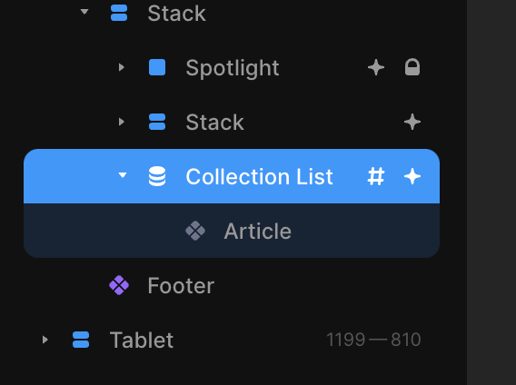
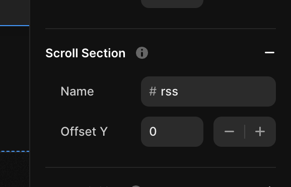

Framer RSS
This tool is small script that scrapes your Framer site every so often, generates an RSS feed, and serves it on a URL.
Works well enough for my personal use, hope it helps you too. - @clearlysid
Usage
- In your Framer project, add the id
rssto your Collection List component.  - Deploy your site
- Enter the URL of the page that has the Collection List component
- Click "Create Feed"
Other Notes
This tool works for most basic Framer sites, but there are exceptions. We make some assumptions about your site to be able to extract details about each post (title, date, etc.). The exact mechanism to do this varies from site to site.
If it doesn't work on your site, I encourage you to open an issue on Github along with a link to it and I'll try to lend a hand.
If you'd like to contribute or self-host, the code is open source. Consider donating via Github Sponsors if it helped, that way I can cover the server costs if any.

Improvements
- Create better caching mechanism so feeds are not generated at each request
- Make Framer scraping logic more robust for posts
- ✅
Improve landing page to make initial setup easier - ✅
Allow self-hosting this project on Netlify/Vercel